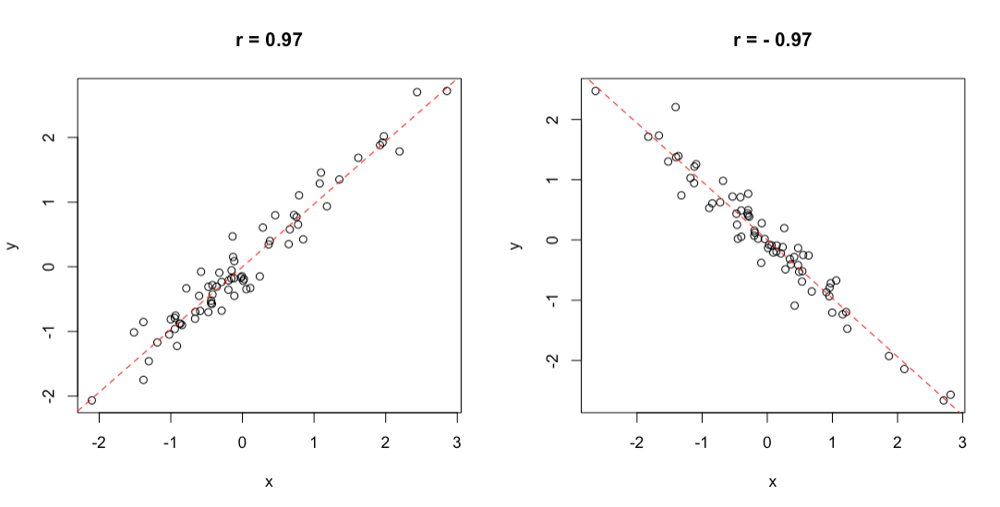
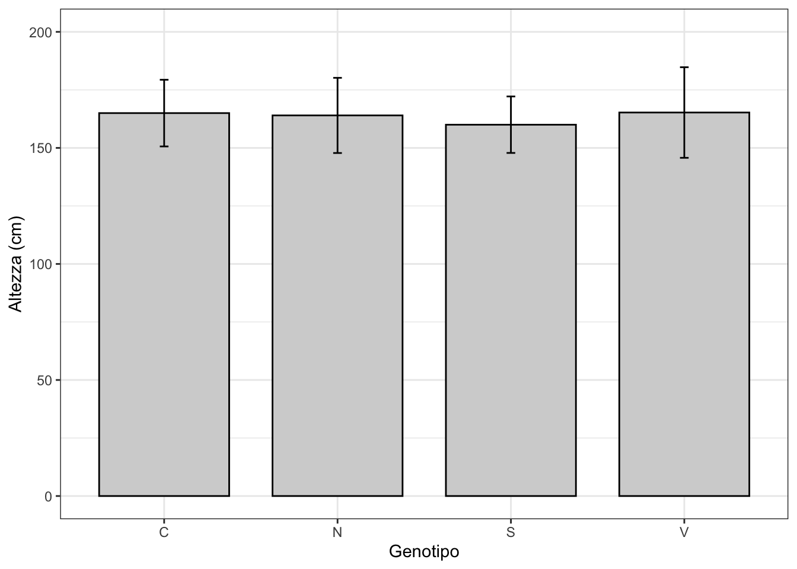
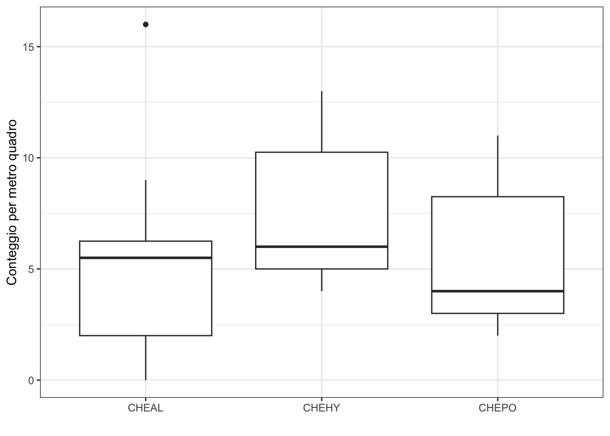
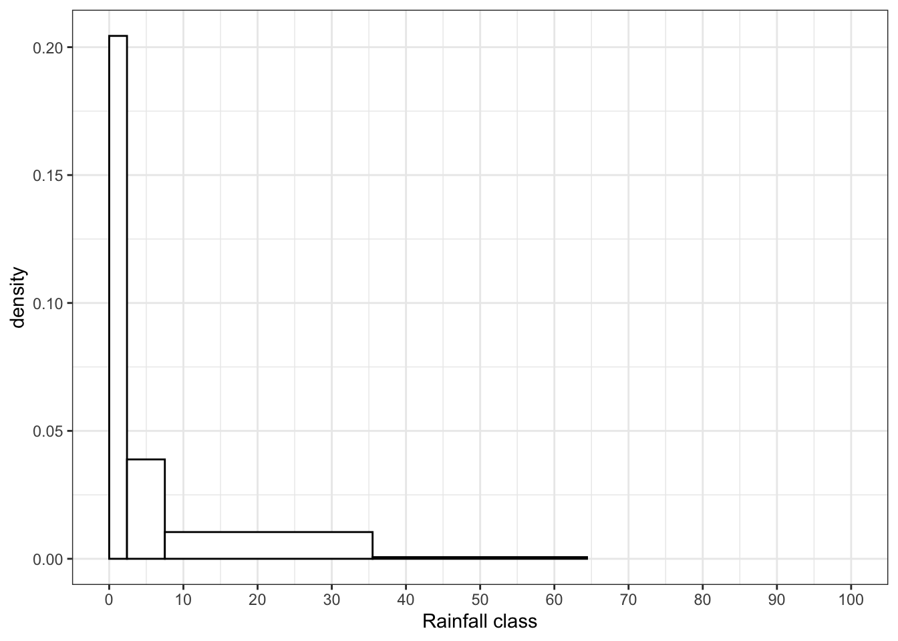
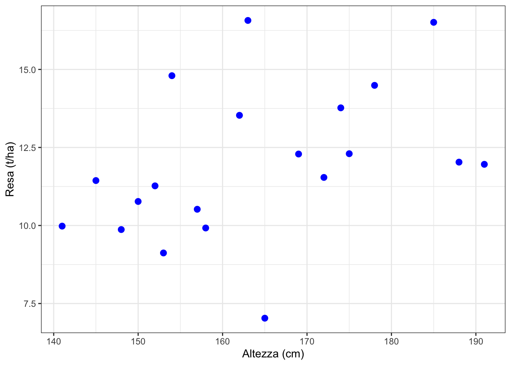

3 Descrivere le osservazioni sperimentali
Statistics is the grammar of science (K. Pearson)
Il risultato finale di ogni esperimento manipolativo/comparativo è un dataset, costituito da un insieme di misurazioni/osservazioni effettuate su diversi soggetti sperimentali, in relazione a una o più proprietà (ad esempio, altezza, peso, concentrazione, sesso, colore). Come accennato nel Capitolo 1, l’elenco dei valori per una di queste proprietà è chiamato ‘variabile’ e il primo compito dell’analisi dei dati è quello di descriverla, utilizzando le statistiche più appropriate. Questo Capitolo rappresenta una breve introduzione alla statistica descrittiva e prende in considerazione dati quantitativi, conteggi e proporzioni, presupponendo che i dati nominali e ordinali vengano convertiti in conteggi o proporzioni prima delle analisi (ad esempio, il conteggio/la proporzione di piante malate per parcella), che è la pratica più comune nella ricerca di pieno campo. Informazioni più dettagliate sulla statistica descrittiva possono essere trovate, ad esempio, in Holcomb (2017).
Per variabili quantitative, sia continue che discrete, dobbiamo descrivere alcune caratteristiche fondamentali:
- tendenza centrale
- dispersione
- forma
La tendenza centrale è un valore che rappresenta il ‘centro’, attorno al quale si collocano tutte le osservazioni; al contrario, la dispersione misura la distanza delle osservazioni tra di loro, cioè, in altre parole, la loro variabilità. Le statistiche di ‘forma’ riguardano aspetti come, ad esempio, la simmetria (cioè se i dati siano simmetricamente disposti intorno ad un indicatore di tendenza centrale) e la presenza più o meno rilevante di valori molto distanti dalla media/mediana; dato il loro impiego marginale nella ricerca agraria, verranno trascurate (solo per motivi di spazio, non perchè non siano importanti), rimandando alla lettura di testi più approfonditi, come quello citato in precedenza.
3.1 Indicatori di tendenza centrale
L’indicatore di tendenza centrale più diffuso è la media aritmetica, che non necessita di particolari spiegazioni: si tratta della somma dei dati (\(x\)) divisa per il loro numero (\(n\)):
\[\mu = \frac{\sum\limits_{i = 1}^n x}{n}\]
La media è il valore centrale in termini di distanze euclidee, nel senso che, per definizione, la somma delle distanze tra ciascun valore e la media del gruppo è sempre zero. In altre parole, i valori superiori alla media e quelli inferiori alla media, globalmente, sono equidistanti dalla media stessa. Tuttavia, se ordiniamo i valori in ordine crescente/decrescente, la media non si trova necessariamente in posizione centrale, nel senso che il numero di valori superiori alla media potrebbe non essere uguale al numero di valori inferiori alla media. Ad esempio, se consideriamo un elenco ordinato di valori composto da 1, 4, 7, 9 e 10, la media è 6.2 e il numero di valori inferiori alla media è due, mentre il numero di quelli inferiori è tre. Se modifichiamo il valore più alto da 10 a 100, la nuova media si sposta verso l’alto e diviene pari a 24.2, risultando superiore a tutti i valori del gruppo tranne uno.
Un’altra importante statistica di posizione che, per definizione, rappresenta il “valore centrale” in ogni variabile ordinata, è la cosiddetta mediana. Si calcola facilmente ordinando i valori in ordine crescente e, se il numero di valori è dispari, prendendo il valore nella posizione \((n + 1)/2\) (dove \(n\) è il numero di valori), mentre, se il numero di valori è pari, prendendo i due valori nelle posizioni \(n/2\) e \(n/2 + 1\) e calcolandone la media. Ad esempio, se consideriamo gli stessi valori di prima (1, 4, 7, 9 e 10), la mediana è 7 e non cambia se modifichiamo il valore più alto in 100. In pratica, la mediana è totalmente indipendente dai valori più alti o più bassi di una variabile e, per questo motivo, si dice che è più robusta della media rispetto ai cosiddetti outliers (valori ‘anomali’).
3.2 Indicatori di dispersione
Conoscere la tendenza centrale di un collettivo è importante, ma non è sufficiente. Infatti, una media pari a 100 può essere ottenuta con tre individui che misurano 99, 100 e 101, rispettivamente, o con tre individui che misurano 1, 100 e 199. E’ evidente che i due gruppi hanno la stessa tendenza centrale, ma sono molto diversi in termini di dispersione (o variabilità) rispetto alla media. Per descrivere la dispersione dei dati possiamo utilizzare il campo di variazione, che è la differenza tra la misura più bassa e la misura più alta. In realtà, questo indicatore è poco diffuso, perché considera solo i valori estremi del collettivo e non necessariamente cresce al crescere della variabilità. Altri indicatori sono più diffusi ed affidabili, come la devianza, la varianza, la deviazione standard ed il coefficiente di variabilità, tutti legati da relazioni algebriche ben definite.
La devianza, generalmente nota come somma dei quadrati (abbreviata SS, da sum of squares) è data da:
\[SS = \sum\limits_{i = 1}^n {(x_i - \mu)^2 }\]
La devianza è un indicatore di dispersione molto utilizzato, soprattutto perché ha un suo preciso significato geometrico, in quanto somma delle distanze euclidee al quadrato, rispetto alla media. Tuttavia, ha due aspetti che vanno tenuti in considerazione: in primo luogo, proprio perché è una somma, il valore finale dipende dal numero di addendi e quindi non la si può utilizzare per confrontare la variabilità di collettivi con diversa numerosità. Inoltre, l’unità di misura della devianza è pari al quadrato dell’unità di misura originale dei dati; ad esempio se le osservazioni sono espresse in centimetri (come nel nostro esempio), la devianza è espressa in centimetri quadrati, il che rende più difficoltosa l’interpretazione dei risultati.
Oltre dalla devianza, un indicatore molto utilizzato è la varianza campionaria (o semplicemente varianza), che è data dalla devianza divisa per il numero di dati meno uno:
\[\sigma^2 = \frac{SS}{n - 1}\]
La varianza è anche detta scarto quadratico medio (mean square, in inglese) e ci si potrebbe chiedere perché non si divida la devianza (somma dei quadrati) per il numero di osservazioni, senza sottrarre un’unità. In effetti, entrambe le espressioni sono possibili, per ottenere, rispettivamente, la cosiddetta ‘varianza della popolazione’ (\({SS}/{n}\)) e la ‘varianza campionaria’ (\({SS}/({n-1})\)); la prima è una semplice statistica descrittiva, che esprime la variabilità dei dati, senza alcun riferimento ad altri entità non incluse nei dati stessi. La seconda, invece, è utilizzabile quando i dati rappresentano un campione estratto da una popolazione e si voglia caratterizzare (stimare) la varianza della popolazione e non solo quella del campione in nostro possesso. In molti testi di statistica viene dimostrato come, estraendo un campione da una popolazione con varianza nota e calcolando la varianza del campione con la formula che impiega \(n\) al posto di \(n - 1\) al denominatore, otteniamo una sottostima della varianza della popolazione (Sokal and Rohlf 1981)1.
Dato che è divisa per la numerosità del colletivo o per una grandezza da essa derivata, la varianza può essere utilizzata per confrontare la variabilità di gruppi diversamente numerosi, anche se permane il problema dell’unità di misura, che è sempre il quadrato di quella delle singole osservazioni.
Per eliminare questo problema si ricorre alla radice quadrata della varianza, cioè la deviazione standard, che si indica con \(\sigma\). La deviazione standard è espressa nella stessa unità di misura dei dati originali ed è quindi molto utilizzata per descrivere l’incertezza assoluta di misure ripetute più volte.
Media e deviazione standard sono spesso riportate contemporaneamente, utilizzando un intervallo \(l\) definito come:
\[l = \mu \pm \sigma\]
Un problema della deviazione standard è che essa, in assenza della media, non riesce a dare informazioni facilmente comprensibili; infatti, se dicessimo semplicemente che un gruppo di individui ha una deviazione standard pari a \(12.36\), cosa potremmo concludere in relazione alla variabilità di questo collettivo? È alta o bassa? È evidente che, senza sapere la media, non riusciamo a rispondere a questa domanda: la variabilità potrebbe essere considerata molto alta se la media fosse bassa (ad esempio 16), oppure molto bassa, se la media fosse alta (esempio 1600). Per questo, se dovessimo descrivere la variabilità dei dati indipendentemente dalla media, dovremmo utilizzare il coefficiente di variabilità (CV):
\[CV = \frac{\sigma }{\mu } \times 100\]
Il CV è un numero puro e non dipende dall’unità di misura e dall’ampiezza del collettivo, sicché è molto adatto ad esprimere, ad esempio, l’errore degli strumenti di misura e delle apparecchiature di analisi (incertezza relativa).
Come la media, anche la devianza, la varianza e la deviazione standard sono sensibili agli outliers. Pertanto, in presenza di osservazioni aberranti, preferiamo descrivere la variabilità del collettivo utilizzando i cosiddetti percentili, che, estendendo il concetto di mediana, bipartiscono il collettivo in modo da lasciare una certa percentuale di individui alla loro sinistra. Ad esempio, il primo percentile bipartisce il collettivo in modo che l’1% dei soggetti sono più bassi e il 99% sono più alti. Allo stesso modo, l’ottantesimo percentile bipartisce il collettivo in modo che l’80% dei soggetti sono più bassi e il 20% sono più alti. Ovviamente, la mediana rappresenta il 50-esimo percentile.
I percentili più utilizzati per descrivere la dispersione di un collettivo sono il 25-esimo e il 75-esimo, che individuano un intervallo all’interno del quale è compreso il 50% dei soggetti (scarto interquartile): se questo intervallo è piccolo, significa che la variabilità è bassa. Calcolare i percentili a mano non è banale e, di conseguenza, lo faremo nei paragrafi successivi, utilizzando R.
3.2.1 Esempio 3.1
Per esempio, consideriamo il seguente dataset, che elenca le altezze di quattro piante di mais \(d = [178, 175, 158, 153]\)
Il calcolo della media è banale:
\[\mu = \frac{178 + 175 + 158 + 153}{4} = 166\] Nell’esempio precedente, i dati sono in numero pari, quindi la mediana è: \((158 + 175)/2 = 166.5\).
Di seguito calcoliamo le tre statistiche fondamentali di dispersione:
\[SS = \left(178 - 166 \right)^2 + \left(175 - 166 \right)^2 + \left(158 - 166 \right)^2 + \left(153 - 166 \right)^2 = 458\]
\[\sigma^2 = \frac{458}{3} = 152.67\]
\[\sigma = \sqrt{152.67} = 12.36\]
L’ultimo valore attesta che, ‘mediamente’, la distanza euclidea tra ogni valore e \(\mu\) è pari \(12.36\) centimetri.
Il coefficiente di variabilità è invece:
\[CV = \frac{12.36}{166} \times 100 = 7.45 \%\]
3.3 Incertezza delle misure derivate
Immaginiamo di avere due misure ‘incerte’, quantificate come \(A \pm \sigma_A\) e \(B \pm \sigma_B\), dove \(\sigma_A\) e \(\sigma_B\) rappresentano le incertezze assolute, espresse come deviazioni standard. Se volessimo calcolare una quantità derivata, come \(C = pA + qB\), dove \(p\) e \(q\) sono due costanti qualunque, quale potrebbe essere l’incertezza assoluta della misura derivata? In questo caso si parla di propagazione degli errori, la cui legge dice che, se A e B sono indipendenti, la deviazione standard della combinazione è pari a:
\[\sigma_C = \sqrt{p^2 \sigma^2_A + q^2 \sigma^2_B}\]
Per chi fosse interessato, informazioni dettagliate sulla legge di propagazione degli errori sono disponibili sul blog associato a questo libro (https://www.statforbiology.com/2024/stat_general_errorpropagation/).
3.3.1 Esempio 3.2
Abbiamo determinato indipendentemente il contenuto di saccarosio e fruttosio in un determinato substrato di crescita, che risultano rispettivamente pari a: \(22 \pm 2\) mg/g e \(14 \pm 3\) mg/g. Qual è il contenuto totale di zuccheri e la sua deviazione standard? La soluzione si può facilmente ricavare sommando i due contenuti (22 + 14 = 36 mg/g) e calcolando la deviazione standard come \(\sqrt{2^2 + 3^2} = 3.6\).
3.3.2 Esempio 3.3
Nel caso dell’esempio 3.2, qual è la concentrazione media dei due zuccheri, con la relativa deviazione standard? Anche in questo caso, possiamo facilmente calcolare che la concentrazione media è pari a:
\[Av = \frac{22 + 14}{2} = \frac{1}{2} \times 22 + \frac{1}{2} \times 14 = 18\],
mentre la deviazione standard è pari a:
\[\sigma_{Av} = \sqrt{\left( \frac{1}{2} \right)^2 2^2 + \left( \frac{1}{2} \right)^2 3^2} = 1.803\],
3.4 Relazioni tra variabili quantitative: correlazione
Se su ogni soggetto abbiamo rilevato due caratteri quantitativi (ad esempio il peso e l’altezza, oppure la produzione e il contenuto di proteina della granella), è possibile verificare se esista una relazione tra la coppia di variabili ottenute, cioè se al variare di una cambi anche il valore dell’altra, in modo congiunto (variazione congiunta).
Per questo fine, si utilizza il coefficiente di correlazione di Pearson (\(r\))costituito dal rapporto tra la codevianza (o somma dei prodotti) delle due variabili e la radice quadrata del prodotto delle loro devianze:
\[r = \frac{ \sum_{i=1}^{n}(x_i - \mu_x)(y_i-\mu_y) }{\sqrt{\sum_{i=1}^{n}(x_i-\mu_x)^2}}\]
La codevianza (al numeratore nell’equazione precedente) è costituita dalla somma, per tutti gli individui, dei prodotti tra i residui delle due variabili. È positiva quando, per la maggior parte degli individui, i due residui hanno lo stesso segno, il che significa che valori maggiori di una variabile corrispondono a valori maggiori dell’altra (variazione congiunta ‘positiva’), mentre la codevianza è negativa quando, per la maggior parte degli individui, i due residui hanno segni opposti (variazione congiunta ‘negativa’). Una codevianza prossima a 0 significa che i segni dei due residui sono per lo più indipendenti (nessuna variazione congiunta).
La codevianza non ha un plateau predefinito e viene normalizzata dividendola per il prodotto delle due devianze, in modo che il coefficiente \(r\) vari da \(+1\) a \(-1\): se è pari ad 1, abbiamo una situazione ideale di concordanza perfetta (quando aumenta una variabile, aumenta anche l’altra in modo esattamente proporzionale), mentre quando è pari a \(-1\), abbiamo una situazione ideale di discordanza perfetta (quando aumenta una variabile, diminuisce l’altra in modo inversamente proporzionale). Un valore pari a \(0\) è altrettanto ideale ed indica assenza di qualunque grado di variazione congiunta (assenza di correlazione). Nell’intervallo tra \(-1\) ed \(1\), il coefficiente indica una correlazione imperfetta, ma tanto migliore quanto più ci allontaniamo dallo zero e ci avviciniamo a \(-1\) o \(1\). Due esempi di ottima correlazione sono mostrati in Figura 3.1; si evidenzia un elevato grado di correlazione, che, tuttavia, non è perfetta, in quanto i punti non sono esattamente allineati.
3.4.1 Esempio 3.4
Proviamo a considerare il contenuto di olio di 9 lotti di acheni di girasole, misurato con due metodi analitici diversi e riportato più sotto.
A <- c(45, 47, 49, 51, 44, 37, 48, 44, 53)
B <- c(44, 44, 49, 53, 48, 34, 47, 46, 51)Per valutare la entità della correlazione tra i risultati dei due metodi di analisi, dobbiamo eseguire alcune operazioni preliminari, cioè:
- calcolare i residui per A (\(z_A\))
- calcolare i residui per B (\(z_B\))
- calcolare devianze e codevianze
In primo luogo, calcoliamo le due medie, che sono, rispettivamente, 46.44 e 46.22. Successivamente, possiamo calcolare i residui, come differenze tra ogni dato e la sua media, i loro quadrati ed i loro prodotti, come indicato in Tabella 3.1.
| A | B | \(z_A\) | \(z_B\) | \(z_A \times z_B\) | \(z_A^2\) | \(z_B^2\) |
|---|---|---|---|---|---|---|
| 45 | 44 | -1.444 | -2.222 | 3.210 | 2.086 | 4.938 |
| 47 | 44 | 0.556 | -2.222 | -1.235 | 0.309 | 4.938 |
| 49 | 49 | 2.556 | 2.778 | 7.099 | 6.531 | 7.716 |
| 51 | 53 | 4.556 | 6.778 | 30.877 | 20.753 | 45.938 |
| 44 | 48 | -2.444 | 1.778 | -4.346 | 5.975 | 3.160 |
| 37 | 34 | -9.444 | -12.222 | 115.432 | 89.198 | 149.383 |
| 48 | 47 | 1.556 | 0.778 | 1.210 | 2.420 | 0.605 |
| 44 | 46 | -2.444 | -0.222 | 0.543 | 5.975 | 0.049 |
| 53 | 51 | 6.556 | 4.778 | 31.321 | 42.975 | 22.827 |
La somma dei quadrati dei residui ci permette di calcolare le devianze di \(A\) e \(B\) (rispettivamente 176.22 e 239.56), mentre la somme dei prodotti degli residui ci permette di calcolare la codevianza (pari a 184.11).
Il coefficiente di correlazione è quindi:
\[r = \frac{184.11}{\sqrt{176.22 \times 239.56}} = 0.896\]
Vediamo che il coefficiente di correlazione è abbastanza vicino ad 1 e quindi possiamo concludere che i due metodi di analisi danno risultati ben concordanti.
3.5 Statistiche descrittive con R
Prima di leggere questa parte, assicuratevi di avere già una conoscenza di base dell’ambiente R, oppure consultate l’Appendice 1. Un altro prerequisito importante è comprendere che, in generale, ogni dataset contenente le osservazioni sperimentali dovrebbe essere preparato in un formato detto “tidy” (dall’inglese, traducibile come ‘ordinato’, nel senso di ‘giusta posizione degli oggetti’), con una riga per ogni osservazione e una colonna per ogni variabile, mentre la prima riga dovrebbe sempre contenere i nomi delle variabili. Sebbene altri formati di dati possano essere più adatti alla visualizzazione, il formato “tidy” è la base di ogni analisi statistica con la maggior parte dei software e può essere facilmente trasformato in altri formati, se necessario (Wickham, 2014).
In R, le statistiche descrittive vengono calcolate tramite le rispettive funzioni: mean(), median(), var() e sd(), passando il vettore dei dati come primo argomento. I percentili vengono calcolati con la funzione quantile(), passando il vettore dei dati e le probabilità selezionate come frazioni in un vettore, tramite l’argomento probs. La funzione di devianza non è immediatamente disponibile in R (ma si veda il capitolo successivo) e può essere calcolata con la somma dei quadrati degli scarti, come indicato più sopra. Anche il coefficiente di correlazione è facile da ottenere, tramite la funzione cor() e passando i due vettori come argomenti.
3.5.1 Esercizio 3.5
Utilizziamo il dataset ‘heights.csv’, che è disponibile nel pacchetto ‘statforbiology’ e contiene, nella colonne ‘height’, le altezze di venti piante di mais, appartenenti a quattro varietà diverse. Le analisi statistiche sono mostrate nel box sottostante.
library(statforbiology)
dataset <- getAgroData("heights")
dataset$height
## [1] 172 154 150 188 162 145 157 178 175 158 153 191 174 141 165 163 148 152 169
## [20] 185
# Statistiche di tendenza centrale
mean(dataset$height)
## [1] 164
median(dataset$height)
## [1] 162.5
# Statistiche di dispersione
sum( (dataset$height - mean(dataset$height))^2 ) # devianza
## [1] 4050
var(dataset$height) # varianza
## [1] 213.1579
sd(dataset$height) # deviazione standard
## [1] 14.59993
sd(dataset$height)/mean(dataset$height) * 100 # CV
## [1] 8.902395
# Percentili
quantile(dataset$height, probs = c(0.25, 0.75))
## 25% 75%
## 152.75 174.25La correlazione per i dati dell’esercizio 3.4 si calcola invece con la funzione cor(), come indicato più sotto.
cor(A, B)
## [1] 0.89607953.6 Descrizione dei sottogruppi
In biometria è molto comune che il gruppo di soggetti sia divisibile in più sottogruppi, corrispondenti, ad esempio, ai diversi trattamenti sperimentali. In questa comune situazione siamo soliti calcolare, per ogni gruppo, le statistiche descrittive già viste in precedenza, utilizzando la funzione tapply() in R, che richiede tre argomenti, ovvero il vettore delle osservazioni, il vettore che identifica il gruppo a cui appartiene ogni osservazione, e la funzione da calcolare per ciascun gruppo. È necessario sottolineare che le statistiche per gruppo possono essere calcolate in modo efficiente (forse più efficiente) anche utilizzando il pacchetto dplyr() (Wickham, 2023).
3.6.1 Esempio 3.5 (segue)
Nel box sottostante, sempre in relazione al dataset ‘heights’, calcoliamo le altezze medie per ogni varietà, assieme alle deviazioni standard, che salviamo in un nuovo dataframe, da utilizzare di seguito per la grafica.
m <- tapply(dataset$height, dataset$var, mean)
s <- tapply(dataset$height, dataset$var, sd)
descript <- data.frame(Media = m, SD = s)
descript
## Media SD
## C 165.00 14.36431
## N 164.00 16.19877
## S 160.00 12.16553
## V 165.25 19.517093.7 Rappresentazioni grafiche
Le statistiche descrittive possono essere presentate in tabella, oppure, ancora meglio, in un grafico. La visualizzazione dei dati è un argomento vastissimo, sul quale potrete trovare ampie in formazioni in Wickham (2016), Soage (2024) e Holtz (2024) e in numerosi altri libri e siti web2.
Questo paragrafo introduce brevemente i quattro tipi di grafico più importanti e come realizzarli in R, utilizzando il package ggplot2:
- Grafici a barre
- Boxplot
- Istogrammi
- Grafici a dispersione
Un grafico a barre viene utilizzato per visualizzare la relazione tra una variabile numerica e una variabile nominale: ogni classe della variabile nominale corrisponde a una barra e l’altezza di tale barra è proporzionale al valore della variabile numerica per quella classe.
Quando il numero di repliche è elevato (ad esempio, maggiore di 15), la relazione tra una variabile nominale e una variabile quantitativa può essere rappresentata anche da un box plot (diagramma a scatola e baffi), in cui ogni gruppo è rappresentato da una scatola, con il 75° percentile come lato superiore e il 25° percentile come lato inferiore, mentre una linea indica la mediana (50° percentile). Due barre verticali (baffi) partono dal 25° e dal 75° percentile e si estendono, rispettivamente, fino ai valori massimo e minimo. In R, i dati che superano 1,5 volte l’intervallo interquartile sono considerati outlier e vengono rappresentati singolarmente, mentre la lunghezza dei baffi è limitata a 1,5 volte l’intervallo interquartile.
Un altro tipo di grafico è l’istogramma, simile a un grafico a barre, ma utilizzato per rappresentare la densità di probabilità in una serie di intervalli (bin). La densità è data dalla frequenza relativa dei soggetti in ciascun intervallo divisa per l’ampiezza dell’intervallo, in modo che l’area di ciascuna barra rappresenti la massa di probabilità in ciascun intervallo. L’uso degli istogrammi non è molto frequente nella ricerca sul campo, ma li incontreremo diverse volte in questo libro.
Infine, ma non meno importante, uno dei grafici più utilizzati è il diagramma a dispersione, che rappresenta la relazione tra due variabili numeriche, fornendo le coordinate per i simboli.
3.7.1 Esempio 3.5 (continua)
I dati del dataframe ‘descript’ che abbiamo creato poco sopra possono essere rappresentati facilmente con un grafico a barre; con ggplot2, dobbiamo creare prima un’istanza del grafico (funzione ggplot()), poi aggiungere dei layer (geom_col e geom_errorbar), che devono essere ‘mappati’ alle colonne del dataset che forniscono le informazioni per la creazione del grafico stesso.
Il primo layer (geom_col) genera le barre ed è mappato al vettore mu in descStat per generare le altezze delle barre per ogni livello della variabile group. Il secondo layer (geom_errorbar) arricchisce il grafico a barre con barre di errore, per rappresentare le deviazioni standard (\(\mu \pm \sigma\)). Il codice è mostrato nel riquadro di codice 3.4 ed è autoesplicativo; Alla fine, ho utilizzato il tema theme_bw(), ma ognuno di voi può cercarsi nel web il tema estetico che più gli piace. Il grafico finale è mostrato in Figura Figure 3.2.
# Un grafico a barre con ggplot2
library(ggplot2)
ggplot(data = descript) +
geom_col(mapping = aes(y = Media, x = row.names(descript)), width = 0.75,
color = "black", fill = "lightgrey") +
geom_errorbar(mapping = aes(ymin = Media - SD, ymax = Media + SD,
x = row.names(descript)),
width = 0.05) +
scale_y_continuous(limits = c(0, 200),
name = "Altezza (cm)") +
scale_x_discrete(name = "Genotipo") +
theme_bw()
3.7.2 Esempio 3.6
Consideriamo il dataset ‘WeedCounts’, relativo al conteggio di piante di tre specie di infestanti in 20 griglie disposte casualmente in un campo dell’Italia centrale. Poiché il numero di conteggi per ciascuna specie è piuttosto elevato, questo dataset può essere rappresentato con un boxplot, utilizzando il codice nel riquadro seguente Nel caso di Chenopodium album (CHEAL), il valore massimo è 16, considerato un valore anomalo e rappresentato da un cerchio nero pieno (Fig. 3.3).
# Box di codice 3.5
#
# boxplot con ggplot2
dataset <- getAgroData("WeedCounts")
ggplot(data = dataset) +
geom_boxplot(mapping =aes(x = Species, y = Count)) +
scale_y_continuous(name = "Conteggio per metro quadro") +
scale_x_discrete(name = "") +
theme_bw()
3.7.3 Esempio 3.7
Il dataset ‘Rainfall22’ riporta i livelli di precipitazione giornaliera (mm) nell’Italia centrale nel 2022. Questa variabile è composta da un numero molto elevato di osservazioni e il calcolo di semplici statistiche descrittive, come la media e la deviazione standard, è utile, ma non è sufficiente per cogliere le caratteristiche essenziali delle precipitazioni in quel sito e in quell’anno. Pertanto, è interessante costruire una distribuzione di frequenze, considerando sei classi di pioggia (0,1-2,4 mm: pioggia molto leggera, 2,5-7,5 mm: pioggia leggera, 7,6-35,5 mm: pioggia moderata, 35,6-64,4 mm: pioggia piuttosto forte, 64,5-124,4 mm: pioggia forte e > 124,5 mm: pioggia molto forte) e assegnando ogni pioggia alla classe appropriata (questa operazione è solitamente chiamata binning o bucketing).
In R, questo si ottiene utilizzando la funzione cut() e passando come parametri il vettore delle piogge e un vettore contenente i margini degli intervalli, che, per impostazione predefinita, sono aperti a sinistra e chiusi a destra (riquadro di codice 3.6). Successivamente, possiamo utilizzare la funzione table() per contare il numero di piogge in ogni bin (frequenza assoluta) e dividere questo numero per il numero totale di eventi piovosi (frequenza relativa). Secondo la definizione frequentista di probabilità (ovvero: il numero di eventi favorevoli diviso per il numero totale di eventi), questa frequenza relativa corrisponde alla probabilità di ciascuna classe di pioggia nel 2022, nella zona limitrofa alla capannina meteorologica che ha rilevato il dato.
# Box 3.6
#
# Leggi i dati e imposta i margini
dataset <- getAgroData("Rainfall22")
dataset <- dataset[dataset$PRP > 0, ] # Rimuovi i giorni senza pioggia
margins <- c(0, 2.4, 7.5, 35.5, 64.4, 124.4, Inf)
binned <- cut(dataset$PRP, breaks = margins)
frequencies <- table(binned)
frequencies
## binned
## (0,2.4] (2.4,7.5] (7.5,35.5] (35.5,64.4] (64.4,124] (124,Inf]
## 52 21 31 2 0 0
#
# Probabilità di ciascuna classe
probab <- frequencies/length(binned)
probab
## binned
## (0,2.4] (2.4,7.5] (7.5,35.5] (35.5,64.4] (64.4,124] (124,Inf]
## 0.49056604 0.19811321 0.29245283 0.01886792 0.00000000 0.00000000Rappresentare queste probabilità con un grafico a barre potrebbe essere fuorviante perché le diverse ampiezze degli intervalli verrebbero trascurate. Possiamo notare, ad esempio, che la probabilità nel secondo intervallo (0.198) è inferiore alla probabilità nel terzo intervallo (0.292), ma è “concentrata” in un intervallo molto piccolo. In altre parole, ci sono molti eventi nel terzo intervallo proprio perché tale intervallo è molto ampio, ma ci si potrebbe aspettare che la probabilità di una pioggia intorno ai 20 mm (ad esempio, da 19.5 a 20.5, cioè nel terzo intervallo) sia inferiore alla probabilità di una pioggia intorno ai 5 mm (ad esempio, da 4.5 a 5.5, cioè nel secondo intervallo). In termini tecnici, diciamo che la massa di probabilità è più densa nel secondo intervallo rispetto al terzo. Pertanto, possiamo calcolare la densità dividendo la probabilità in ciascun intervallo per l’ampiezza dell’intervallo stesso.
# Calcoli di densità
larghezze <- diff(margins)
densita <- probab/larghezze
densita
## binned
## (0,2.4] (2.4,7.5] (7.5,35.5] (35.5,64.4] (64.4,124] (124,Inf]
## 0.2044025157 0.0388457270 0.0104447439 0.0006528694 0.0000000000 0.0000000000Possiamo utilizzare queste densità per disegnare un istogramma, che sarà composto da un insieme di rettangoli, con altezze pari alla densità in ciascun intervallo e larghezze pari all’ampiezza dell’intervallo, in modo che l’area rappresenti la massa di probabilità in ciascun intervallo. Questi calcoli vengono eseguiti automaticamente in R, passando i margini degli intervalli (bin) vengono assegnati al layer geom_histogram(), come mostrato nel riquadro di codice sottostante. L’istogramma risultante è illustrato in Figura Figure 3.4.
# Code box 3.8
#
# Histogram
ggplot(data = dataset) +
geom_histogram(mapping = aes(x = PRP, y = after_stat(density)),
breaks = margins, fill = "white",
col = "black") +
scale_x_continuous(name = "Rainfall class",
breaks = seq(0, 200, by = 10),
limits = c(0, 100)) +
theme_bw()
3.7.4 Esempio 3.5 (segue)
È possibile produrre un grafico a dispersione utilizzando il layer geom_point() in ggplot; come esempio del suo utilizzo, possiamo tracciare la relazione tra altezza e resa nei dati heights (Riquadro sottostante; Fig. @ref(fig:figName244)).
# Box di codice 3.9
dataset <- getAgroData("heights")
ggplot(data = dataset) +
geom_point(mapping = aes(x = height, y = yield),
cex = 2.5, col = "blue") +
scale_x_continuous(name = "Altezza (cm)") +
scale_y_continuous(name = "Resa (t/ha)") +
theme_bw()
3.8 Domande ed esercizi
- Illustrare e discutere i principali indici di tendenza centrale per le variabili quantitative
- Illustrare e discutere i principali indici di variabilità per le variabili quantitative
- Illustrare e discutere il coefficiente di correlazione di Pearson
- Un’analisi chimica è stata eseguita in triplicato e i risultati sono stati i seguenti: 125, 169 and 142 ng/g. Calcolate la media e tutti gli indicatori di variabilità che conoscete. In che modo può essere espressa l’incertezza assoluta della misura?
- Un ricercatore ha misurato l’altezza di quattro alberi ed il loro diametro (entrambi in metri). I risultati ottenuti sono i seguenti:
Altezza <- c(2.3, 2.7, 3.1, 3.5)eDiametro <- c(0.46, 0.51, 0.59, 0.64). Calcolare il coefficiente di correlazione di Pearson e valutare l’entità della correlazione in base ai valori massimi e minimi ammissibili per questa statistica. - Considerate il file EXCEL ‘rimsulfuron.csv’, che potete trovare in questo percorso: https://www.casaonofri.it/_datasets/rimsulfuron.csv. In questo file sono riportati i risultati di un esperimento con 16 trattamenti e 4 repliche, nel quale sono stati posti a confronti diversi erbicidi e/o dosi per il diserbo nel mais. Calcolare le medie produttive ottenute con le diverse tesi sperimentali e riportarle su un grafico, includendo anche un’indicazione di variabilità. Verificare se la produzione è correlata con il ricoprimento (WeedCover) delle piante infestanti.
ulteriori informazioni nel blog allegato a questo libro, a questo link https://www.statforbiology.com/2018/stat_general_variancesamplepop/↩︎
ad esempio il sito web R Charts, all’indirizzo r-charts.com e la galleria di grafici R all’indirizzo r-graph-gallery.com↩︎